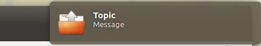

Notifikationen mittels Apache und libnotify
Wie bereits in einem früheren Artikel beschrieben ist es möglich, Notifications am Linux-Desktop (Gnome) abzufangen und abhängig vom Inhalt die verschiedensten Aktionen auszulösen. Ich suchte nun nach einer Möglichkeit, solche Notifications auch remote auslösen zu können.
Diese Aufgabe war überraschend schwer. Mit den unten angehängten Links konnte ich sie dennoch lösen. Hier gleich eine Warnung: Was ich hier beschreibe, macht den Rechner unter Umständen angreifbar - daher bitte nur mit äußerster Vorsicht benutzen!
Zunächst wird eine Netzwerkschnittstelle geöffnet, über die es möglich ist, Notifications zu senden:
socat -u tcp4-listen:12000,reuseaddr,fork,bind=127.0.0.1 exec:$HOME/.local/bin/notify-remote.sh 2> /dev/nullMit dem Kommando
echo -e 'Topic\nMessage\ndocument-open\n\n' | nc 127.0.0.1 12000kann man nun bereits Notifications aus Shell-Skripten heraus senden, wenn das socat übergebene Skript den folgenden Inhalt hat:
#!/bin/sh delay="5000"Dadurch wird zum Beispiel folgende Notification angezeigt:read line summary="$line" read line msg="$line" read line icon="$line" read line echo $icon>/tmp/icon if [ "$line" = "" ] && [ "$summary" != "" ]; then [ -x "$(which notify-send)" ] && notify-send -u critical -t "$delay" -i "$icon fi

Ergebnis: Notification unter Ubuntu UnityDas allein ist natürlich noch keine große Sache - das kann man einfacher haben, indem man notify-send direkt aufruft. Kombiniert man diese Mechanik aber noch mit ein wenig Bash-CGI, kommt eine Lösung heraus, mittels derer man ( es wird vorausgesetzt, dass Apache auf dem Rechner, auf dem die Notifications angezeigt werden sollen installiert ist) durch simples wget oder curl Notifications erscheinen lassen kann:
#!/bin/bashEin Beispiel für die oben gezeigte Notification sähe dann etwa so aus:echo "Content-type: text/html" echo "" echo "<html><head><title>notify.cgi</title></head>" echo "<body>" echo "<h1>" echo "notify.cgi" echo "</h1>" TOPIC=`echo "$QUERY_STRING" | sed -n 's/^.*topic=\([^&]*\).*$/\1/p' | sed "s/%20 MESSAGE=`echo "$QUERY_STRING" | sed -n 's/^.*message=\([^&]*\).*$/\1/p' | sed "s ICON=`echo "$QUERY_STRING" | sed -n 's/^.*icon=\([^&]*\).*$/\1/p' | sed "s/%20/ echo "<p>Sent notification according to:" echo "<dl><dt>TOPIC</dt><dd>" echo "$TOPIC" echo "</dd><dt>MESSAGE</dt><dd>" echo "$MESSAGE" echo "</dd><dt>ICON</dt><dd>" echo "$ICON" echo "</dd></dl></p>" echo "</body></html>" echo -e $TOPIC'\n'$MESSAGE'\n'$ICON'\n\n' | nc 127.0.0.1 12000
wget "http://localhost/cgi-bin/notify.cgi?topic=Topic&message=Message&icon=document-open"
Links
This is a client server perl script I wrote so that my server could essentially send libnotify messages to my local machine
How do I send a notify OSD message to a remote user via ssh?
This post explains how to get notifications (libnotify) from a remote system
DBus notify-send over network
Standard Icon Names
Tags
Android Basteln C und C++ Chaos Datenbanken Docker dWb+ ESP Wifi Garten Geo Git(lab|hub) Go GUI Hardware Java Jupyter Komponenten Links Linux Markup Music Numerik PKI-X.509-CA Python QBrowser Rants Raspi Revisited Security Software-Test sQLshell TeleGrafana Verschiedenes Video Virtualisierung Windows Upcoming...


Neueste Artikel
-
 Neues GitHub-Projekt: duckylights
Neues GitHub-Projekt: duckylights
Nachdem ich mich relativ spät im Leben dazu durchgerungen habe, endlich eine ordentliche Tastatur zu versuchen und auch dieses Mal wirklich eine bekommen hatte (Caseking hatte die Bestellung zwar angenommen, mich aber hinterher darüber informiert, dass das Modell nicht nur nicht lieferbar war, sondern auch nicht klar sei, ob sich dieser Zustand jemals wieder ändern würde), wollte ich wissen, wie einfach es wäre, die Beleuchtung unter Linux nutzen zu können.
Weiterlesen... -
 TeX in Gitlab
TeX in Gitlab
Nach meinen Arbeiten zur Erstellung eines Docker-Containers, der die Funktionalität von WireViz als Microservice verfügbar macht habe ich die entsprechenden Änderungen beim Projekt als Pull-Request eingereicht.
Weiterlesen... -
Hardware für Netzwerk Degrader
Vor ungefähr einem Jahr berichtete ich über den letzten Stand meines Projektes "Schlechtes Netz" - eines smarten Netzwerkkabels mit konfigurierbarer Übertragungsqualität.
Weiterlesen...
Manche nennen es Blog, manche Web-Seite - ich schreibe hier hin und wieder über meine Erlebnisse, Rückschläge und Erleuchtungen bei meinen Hobbies.
Wer daran teilhaben und eventuell sogar davon profitieren möchte, muß damit leben, daß ich hin und wieder kleine Ausflüge in Bereiche mache, die nichts mit IT, Administration oder Softwareentwicklung zu tun haben.
Ich wünsche allen Lesern viel Spaß und hin und wieder einen kleinen AHA!-Effekt...
PS: Meine öffentlichen GitHub-Repositories findet man hier.